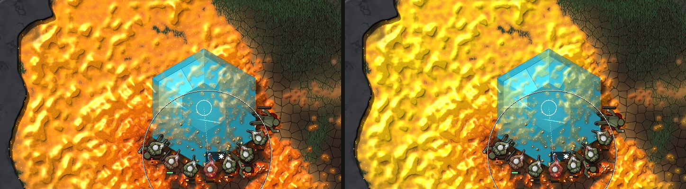

Filmed at rest at zoom 6, the Swarmer (planet 4), the Sporer (planet 5) and the Grudge (planet 7) were the same bumpy gold. Their own looks (the swell, the spores, the scars) only wake once you shoot them, so a new planet opened on a slime you could not tell from the last. Each now takes a real slime mould's colour, kept warm and in the slime's value band. Every clip is the same game on both sides, before on the left and after on the right; only the view shader differs.
Planet 4, the Swarmer: pale lemon
Zoom 6Like Fuligo. Body median 126 to 137 in grey.

Under fire, 0:30The alarm's orange flush round the squad was gold on gold; on the lemon it reads at once.
Planet 5, the Sporer: coral
Zoom 6Like Lycogala. Its gold spores fly off a coral body. Median 102 to 100.
Planet 7, the Grudge: copper
Zoom 6Like Stemonitis. Its pale scar tissue stands out on the copper. Median 124 to 107.
Zoom 12, close up
Planet 4Planet 5Planet 7
Planets 1 to 8 at rest
Planet
Slime
At rest, zoom 6
1
Drifter
gold, a lit sheet round it
2
Sprawler
gold, amber threads
3
Trunk
gold, raised cords
4
Swarmer
lemon (was gold)
5
Sporer
coral (was gold)
6
Sleeper
grey crust, gold where awake
7
Grudge
copper (was gold)
8
home world
the hardest three take turns
What changed, and what was dropped
One colour per species in the view shader (SWARM_HUE, SPORE_HUE, GRUDGE_HUE). The engine's tints (germ, species) still lie over it, starving still greys it, the alarm still flushes it orange. Art direction rule 3 already asked for each species its own hue.
Each colour shows in the slime viewer's colour list, so it can be changed there.
Dropped for the Grudge: a brighter rust, which the shader's saturation push turned into the alarm's own orange, and a darker copper, which sank the body a quarter in grey (median 124 to 93).
No cost: one switch a cell in place of a constant.
Filmed on software Vulkan, run seed 1, idle hand (the alarm still: the greedy hand, 0:30), centred on the slime's heart, 1280 by 800 frames cropped to 720 by 400, 20 frames a quarter second apart from 1:00. Look lane, 2026-11-24, for Direction's Milestone 2 job: planets 4 to 8 each read differently at zoom 6.